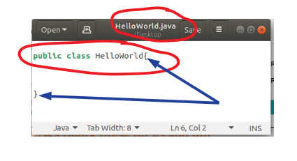
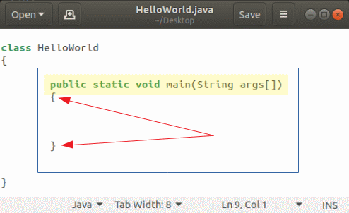

A “class” in the context of the java programming language is just a template for something. Classes in java also serve to organize your code in a logical manner – kind of like school! At school, your day is divided among different classes. You may go to a math class, a history class, and if your are reading this, a computer science class. And, just like java, the math class you take here is also offered somewhere else, so the math class must also have a template so it can be implemented at different schools.
Classes in java are typically separated into different java files, just like your classes at school are separated into different rooms. The way you declare a class in java is illustrated below,
Inside the classes we create, there are "methods". Methods (also known as functions) allow us to define the things a class can do. For example, in a math class we can add, substract, divide, and mulitple numbers. A method that adds two numbers simply stated could look like, a + b, where a and b represent different numbers.
All java programs must have a "main" method. In fact, when you run your program, this is what java looks for first. The main method is also referred to as the "driver" because it drives the program.
The way you declare the main method is illustrated below,
For now, our computer programs will output information to the console, also referred to as the terminal. The console is a basic interface that allows us to interact with our computer. It is also where we will be compiling and running our java programs.
Printing to the consol can be done using the following code
System.out.print("Hello!");
Printing to the consol can also be done using the following code
System.out.println("Hello!");
Below is an example that shows the difference between print and println
Before you can run a java program on your computer you must first compile it. Compiling a java program converts the program from readable code to a format the computer can understand.
Consider the HelloWorld.java file from before. The following line of code would compile this program.
javac HelloWorld.java
When you compile a java program, an additional file is created. The file takes the same as the file you compiled, but the extension is ".class" . In this example, running the above code would create a HelloWorld.class file.
When you run your program you are actually running the class file. The following commmand can be used to run the compiled HellowWorld program,
java HelloWorld
Comments are segments of code that you can add to your program that are ignored by the compiler. They are extremely important for both testing and documenting your code. As we move through the course, you realize the importants of comments and documenting your code.
There are two ways to add comments to your program these are demonstrated below,
//This line is ignored because the two slashes out front are called inline comments
/*This line is ignored because the slash followed by the asterisk begins a block comment
This line also ignored because I have not ended the block quote
This line is ignored too! But closing the block comment will end the quote. I will do this with a asterisk followed by a backslash */